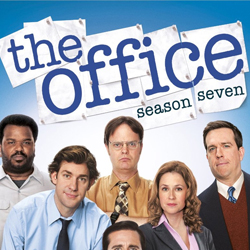

| Home | The Seasons | The Characters | The Reviews |

The Office |
The seventh season of the American television comedy The Office premiered on September 23, 2010 and concluded on May 19, 2011 on NBC. The season consisted of 26 half-hours of material, divided into 22 half-hour episodes and two hour-long episodes. The seventh season aired on Thursdays at 9:00 p.m. (ET) as part of Comedy Night Done Right.[3] This was the last season to feature Michael Scott, played by Steve Carell, as the lead character.